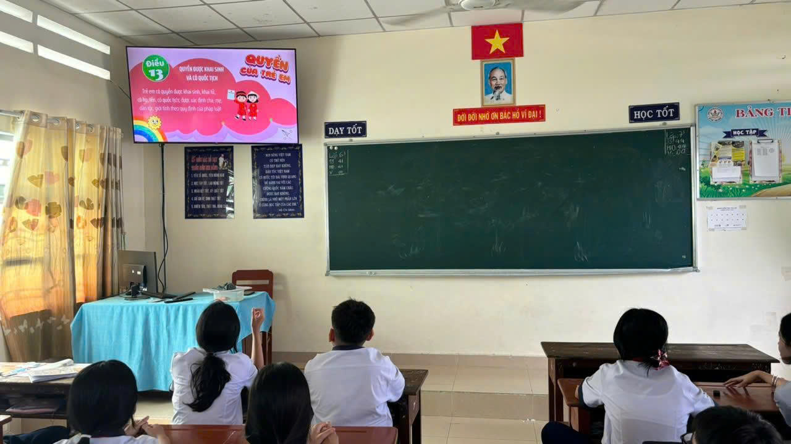
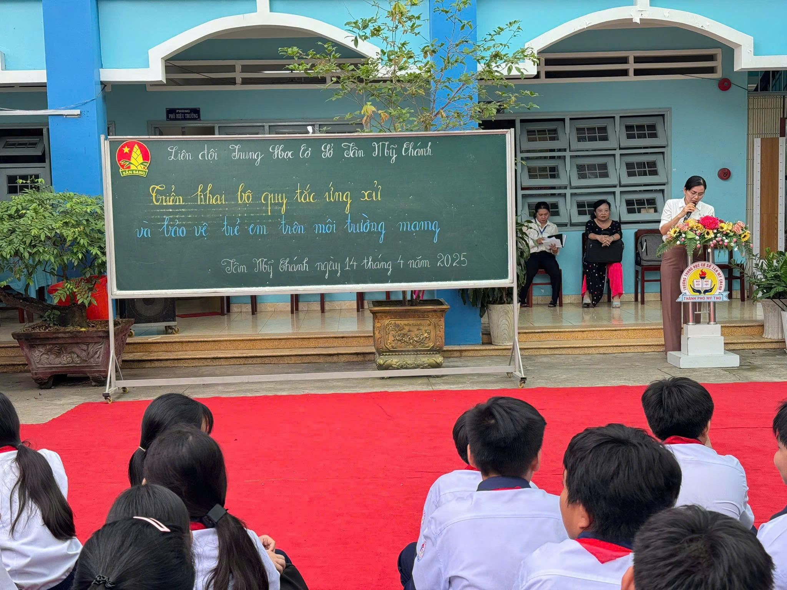
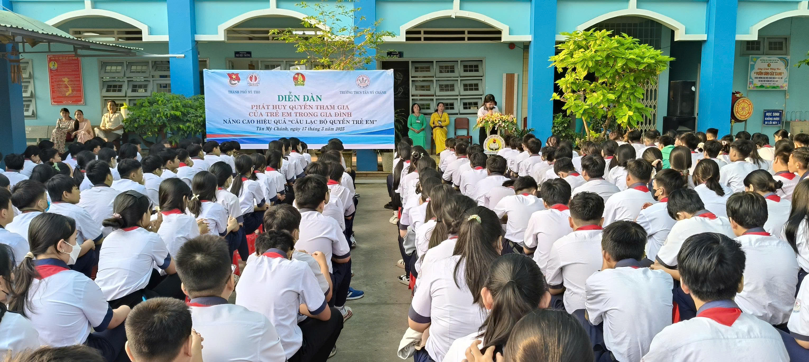

🏛️ Cơ quan ban hành

- Ủy ban nhân dân phường Mỹ Phong (Công văn số 1198/UBND-VHXH, ngày 24/9/2025)
- Sở Giáo dục và Đào tạo tỉnh Đồng Tháp (Công văn số 718/SGDĐT-VP, ngày 17/9/2025)
🎯 Mục tiêu chuyên đề

Tăng cường tuyên truyền, phòng ngừa và đấu tranh với các hành vi trộm cắp, cố ý gây thương tích trong trường học;
Đảm bảo môi trường giáo dục an toàn, lành mạnh và thân thiện cho học sinh, giáo viên và cán bộ nhà trường.
📌 Nội dung triển khai
| 🔢 STT | Biện pháp | Mục tiêu & hành động cụ thể |
|---|---|---|
| 1️⃣ | Lồng ghép giáo dục pháp luật | Tổ chức sinh hoạt chuyên đề, sân khấu hóa, thảo luận nhóm để học sinh hiểu rõ hậu quả của hành vi vi phạm. |
| 2️⃣ | Truyền thông cảnh báo đa kênh | Đăng infographic, video cảnh báo trên website, Zalo, Facebook để nâng cao nhận thức toàn trường. |
| 3️⃣ | Theo dõi học sinh có dấu hiệu vi phạm | Lập danh sách học sinh cần quan tâm, phân công giáo viên hỗ trợ, tư vấn và định hướng hành vi. |
| 4️⃣ | Ký cam kết toàn trường | Học sinh, giáo viên, cán bộ cùng cam kết không vi phạm pháp luật và tố giác hành vi sai trái. |
| 5️⃣ | Phối hợp chặt chẽ với phụ huynh | Giáo viên chủ nhiệm trao đổi thường xuyên với phụ huynh, đặc biệt với học sinh cá biệt để cùng giáo dục và hỗ trợ. |
🎬 Video tuyên truyền chuyên đề
🤝 Phối hợp ba bên

Thực hiện mô hình phối hợp chặt chẽ giữa Nhà trường - Gia đình - Địa phương nhằm phát hiện sớm, ngăn chặn kịp thời các hành vi vi phạm,
đồng thời giáo dục học sinh nâng cao ý thức pháp luật và trách nhiệm công dân.
🗣️ Thông điệp chuyên đề

“Trường học là nơi an toàn – không dung chứa bạo lực và vi phạm pháp luật.”
“Chung tay xây dựng môi trường giáo dục thân thiện, tích cực và không bạo lực.”
🗓️ Thời gian & chỉ đạo
- Công văn số 718/SGDĐT-VP ngày 17/9/2025 của Sở Giáo dục và Đào tạo tỉnh Đồng Tháp
- Công văn số 1198/UBND-VHXH ngày 24/9/2025 của UBND phường Mỹ Phong
🔗 Thông tin liên quan
- “Theo báo Tuổi Trẻ, nguồn tin tại đây cho biết”
Xem bài viết trên báo Tuổi Trẻ
🎮 Tiếp theo, chúng ta hãy chơi trò chơi!
Sau khi tìm hiểu chuyên đề, hãy cùng nhau tham gia trò chơi tương tác để ôn lại kiến thức và rèn luyện kỹ năng xử lý tình huống trong môi trường học đường.